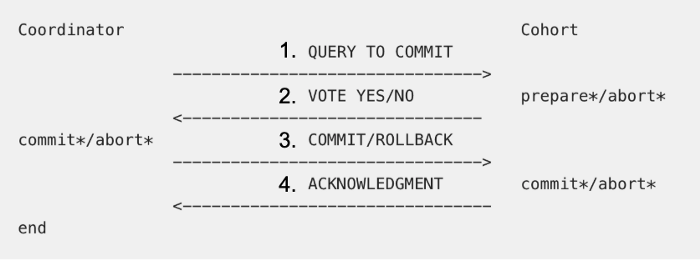

two phase commit
2단계 커밋 프로토콜
Two-phase Commit이란?
프로그래머가 별도의 프로그램 없이 글로벌 데이터베이스의 무결성을 보장하는 기법입니다.
분산 환경 데이터베이스를 사용하는 경우 사용됩니다.
구성
준비 단계(Prepare Phase)와
완료 단계(Commit phase)로 나누어집니다.
준비 단계 및 완료 단계

2PC는 그림과 마찬가지로 Request -> Prepared -> Commit을 거칩니다.
일반적으로 commit은 prepare-commit으로 이루어진다는 걸 생각해 봤을 때 하나의 layer가 추가되었다고 할 수 있습니다.
Two-phase Commit의 수행
(1) 준비 단계에 대한 응답은 prepared, Read-Only, Abort가 있습니다.
Prepared는 Data가 정상적으로 수정되었으며 Prepare되었음을 의미합니다.
Read-Only 는 해당 노드에 데이터의 수정이 없었다는 의미입니다.
Abort는 Prepare되지 않았음을 의미합니다.
(2) 모든 노드에서 prepared가 되면 commit phase가 수행됩니다.
그러나 한 노트라도 abort 되면 commit phase에서 전 노드에 대한 Rollback을 수행합니다.